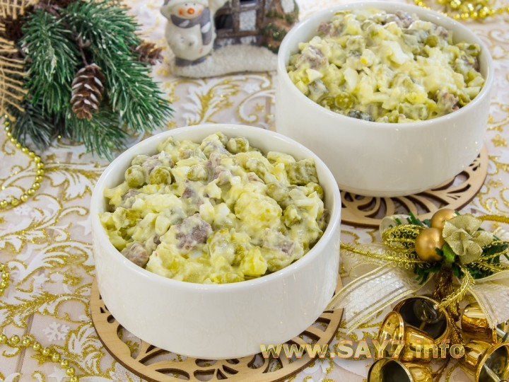

Retsept
- 1 purk (400 g) rohelisi hernesid (ilma vedelikuta 250 g)
- 300 g liha (veiseliha, kana)
- 4 muna
- 350 g kartulit
- 150 g marineeritud või marineeritud kurki
- 150 g sibulat
- sool
- majonees
Ettevalmistus
- Keeda liha pehmeks (keeda pärast keetmist umbes 40 minutit).
Rahune maha.
- Keeda kartulid pehmeks. Anna tall jahtuda.
- Lõika liha kuubikuteks.
- Koori kartulid. Lõika kuubikuteks.
- Haki sibul peeneks.
- Valage selle peale keeva veega. Jätke 10 minutiks toimima.
- Tühjendage vesi. Loputage sibul külmas vees.
- Haki kurgid peeneks.
- Haki munad peeneks.
- Segage kartulid, liha, sibul, herned (tühjendage vesi), munad, kurgid. Sool.
- Maitsesta majoneesiga. Kaunista maitse järgi.
- Saate kaunistada rohelistest hernestest valmistatud kalasabaga (ülaosa on jõhvikas).
- HEAD ISU!